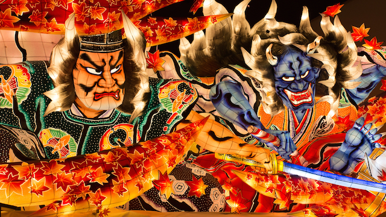

"2020.09.11"

青森には「ねぶた師」という職業があり、それを生業にして生きている人達がいる。
ただし、一人前になるのは60を過ぎる頃だという。それまでは二足の草鞋を履き、数十年続けてようやく一本立ち出来るそうだ。
洋服の仕事について早15年。
15年もやったと、息巻いていたがそんな話を聞いたらまだまだ未熟者だと痛感させられた。
メディアではファッションを取り上げる機会が増えたのにファッションの価値は下がり続けている。
15年という月日は、まだ何者でもない。
ファッションが単なる「消費」に成り下がろうとしている今だからこそ、私はもう一度、この道の先にある灯火を見つめ直したい。
「好きだけじゃ続けられない、人に喜んでもらう情熱が無ければ続けられない」
――とあるねぶた師